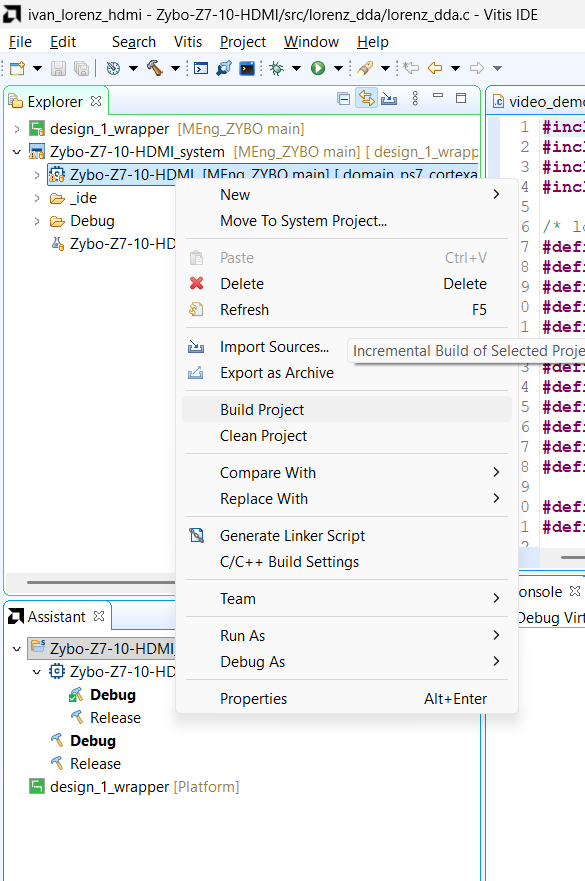
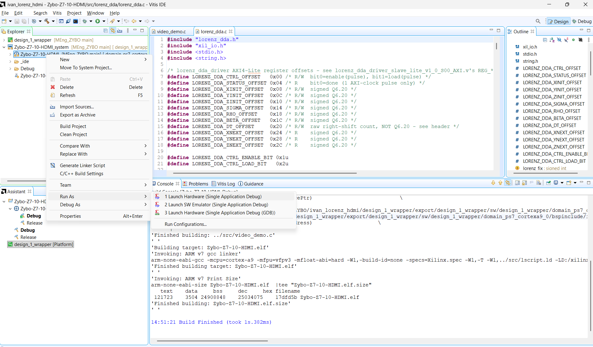
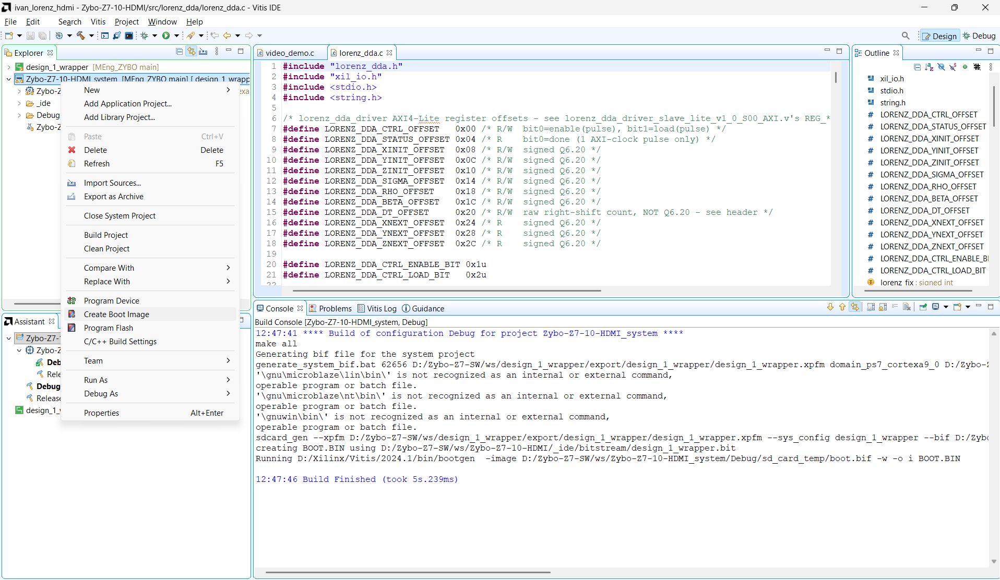
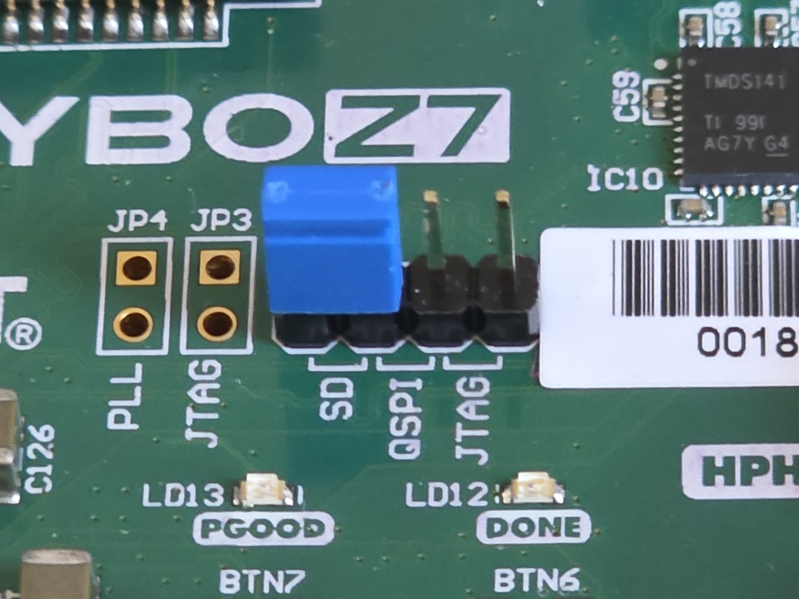

Attempt 3 · run, SD boot and repository hygiene (09-22)
Make it survive a power cycle and keep git healthy.
07.1Run over JTAG
What I did
- JP5 = JTAG. Terminal open at 115200 first (text printed before it opens is lost).
- Xilinx → Program Device with the new bitstream. Answering Yes to 'executables ... doesn't exist' is fine — no ELF is chosen there.
- Build the app: right-click
Zybo-Z7-10-HDMI→ Build Project (Clean first if the project was regenerated). - Right-click
Zybo-Z7-10-HDMI→ Run As → Launch Hardware (Single Application Debug). - Expect: black 1080p screen with the divider cross, the key menu on the terminal, and the three traces building up.
Why
Confirms the whole chain (bitstream, XSA/BSP, app) before making it persistent.
Figure (text only). Menu Xilinx → Program Device, pick the new bitstream and click Program.


07.2Create the boot image
What I did
- Right-click
Zybo-Z7-10-HDMI_system→ Create Boot Image: partitions arefsbl.elf, the bitstream and the app ELF. Check each path points at the current build. - The system project still referenced Digilent's old workspace (
D:/Zybo-Z7-SW/ws/...), so Vitis could not build the template; I pointedZybo-Z7-10-HDMI_system.sprjat the localdesign_1_wrapper.xpfm(and refreshed the project). - Output:
Zybo-Z7-10-HDMI_system/_ide/bootimage/BOOT.bin. The oldDebug/sd_card/BOOT.BIN(2024-07-04) is stale — do not use it.
Why
A stale BOOT.BIN would run Digilent's old app with an old bitstream.
Code · system.bif — what goes into BOOT.BIN (bif)
ivan_lorenz_hdmi/Zybo-Z7-10-HDMI_system/Debug/system.bif
/*design_1_wrapper*/
the_ROM_image:
{
[bootloader] <design_1_wrapper/boot/fsbl.elf>
<bitstream>
<elf,ps7_cortexa9_0>
}Code · command-line alternative to Create Boot Image (shell)
system.bif = fsbl.elf + <bitstream> + application ELF
cd ivan_lorenz_hdmi/Zybo-Z7-10-HDMI_system/Debug
bootgen -image system.bif -o sd_card/BOOT.BIN -w
07.3Boot from SD
What I did
- FAT32 SD card, copy the new
BOOT.binto the root; JP5 = SD; insert card; power on. - Result: the FPGA loads and the plot starts by itself at power-up, no PC needed.
Why
PL configuration is volatile; only the SD (or QSPI) image survives a power cycle.

07.4Keep the repo pushable
What I did
- A push failed because
Zybo-Z7-10-HDMI-hw.xpr.zip(117 MB) exceeded GitHub's 100 MB limit. The two Digilent archives were removed from the two unpushed commits and*.zipadded to.gitignore.
Why
Only source, project files and IP go into git; everything regenerable stays out.
Code · build junk that must stay out of git (excerpt) (gitignore)
.gitignore (root) — the .zip line was added after the 117 MB push rejection
*.bit
*.xsa
*.xci
*.runs/ *.gen/ *.cache/ *.hw/ *.sim/ *.ip_user_files/
.metadata/
_ide/ Debug/ Release/
*.elf *.bin *.o *.d
# plus the two Digilent release archives:
*.zipRelated: Issue I-17
Generated from the project's chat history, git log and source files. Screenshots live in
docs-site/figures/ (see its README). Yellow TODO(user) marks facts I could not find.